Encuesta mixta
42 personas · Google Forms. Preguntas categóricas y dos escalas del 1 al 5 (facilidad y frustración).
Información clara, actualizada y centralizada sobre comercios y servicios de Encarnación, para que decidir dónde ir no dependa del primero que aparece.
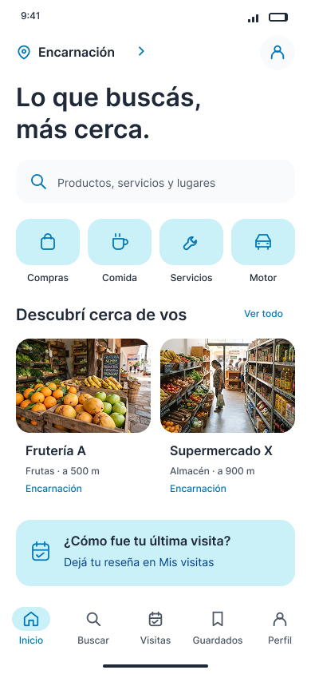
1 · Empatizar
Antes de proponer una solución necesitábamos confirmar si la dispersión y desactualización de la información sobre comercios locales era un problema real y no una suposición del equipo.
42 personas · Google Forms. Preguntas categóricas y dos escalas del 1 al 5 (facilidad y frustración).
4 entrevistas en profundidad con una guía que iba del comportamiento habitual a situaciones concretas de pérdida de tiempo o dinero.
Se generaron etiquetas, citas textuales y niveles de confianza; luego se agruparon en un mapa de afinidad y se verificaron en tres pasos.
«No sabía dónde preguntar ni por qué medio.»
«Compré en el primer lugar que encontré por si no había otros lugares o estaba más caro.»
«Los precios que me contaron no coincidían.» «La información en Google está bastante desactualizada.» «Poder tener disponible todo en un lugar.»
Sospecha que puede estar pagando de más; cree que hay mejores opciones que no encontró a tiempo; duda de que redes y Maps estén al día.
Busca en Maps o Instagram, pregunta a conocidos, recorre la ciudad cuando la búsqueda online no alcanza y compara si tiene tiempo.
Frustración ante un precio inesperado, desconfianza, resignación al depender de otros y arrepentimiento al descubrir después una mejor opción.
Le pedimos una etiqueta corta por mención relevante, la cita textual exacta y un nivel de confianza. Después le pedimos agrupar las etiquetas en un mapa de afinidad, marcar contradicciones y señalar como «evidencia limitada» los temas sostenidos por menos de tres de los cuatro participantes. La verificación humana revisó que las citas fueran textuales, que las etiquetas fueran inferencias razonables y que los temas coincidieran con el mapa armado manualmente por el equipo.
2 · Definir
«Los usuarios pierden tiempo al no encontrar información sobre lugares de interés.»
Los usuarios necesitan encontrar información actualizada y reunida en un solo lugar sobre los lugares y comercios, porque pueden perder tiempo y dinero si van al primero que encuentran sin tener otras opciones.
¿Cómo podríamos tener toda la información organizada y actualizada sobre los lugares y comercios?
| Hallazgo | Decisión / requisito |
|---|---|
| 90% perdió tiempo por información poco clara | Centralizar la información en una sola fuente con datos visibles de entrada. |
| 97% eligió el primero que encontró | Mostrar alternativas y permitir comparar antes de elegir. |
| 90% necesita precios; 4/4 los encontró ocultos | Mostrar precios como dato principal en la ficha del lugar. |
| 76% no conocía el sitio oficial | Hacer visible el origen y el estado de actualización de los datos. |
| 71% gastó más de lo esperado | Comparación por precio/calidad y contacto para consultar antes de ir. |
| 3/4 dependen de conocidos | Comentarios, valoraciones y reporte de información desactualizada. |
| 4/4 coinciden sobre el recién llegado | Búsqueda por necesidades con filtros de precio, distancia y horario. |
| Uso desde la calle | Diseño responsive y autenticación para quien actualiza datos. |
3 · Idear
A partir de la pregunta «¿Cómo podríamos tener toda la información organizada y actualizada sobre los lugares y comercios?», el equipo generó alternativas, priorizó tres y las llevó a Crazy 8s.
| Idea priorizada | Historia o requisito que atiende | Por qué la eligieron |
|---|---|---|
| Registro colaborativo de lugares, reseñas y usuarios. | «Quiero poder dejar una valoración al lugar…» | Las opiniones ayudan a decidir a la hora de ir a un lugar. |
| El usuario elige qué quiere hacer y la app le recomienda lugares. | «Quiero recibir recomendaciones basadas en mí…» | El usuario no pierde tiempo buscando: recibe directamente las mejores opciones. |
| El usuario elige su prioridad (dinero, tiempo, horario) y se recomienda lo mejor. | «Quiero ver resultados según factores de mi interés…» | Evita perder tiempo y dinero yendo al lugar que más conviene. |
Cada integrante realizó su propia hoja de ocho variantes en ocho minutos. De las hojas se tomaron dos recuadros para curarlos con los seis principios de diseño.
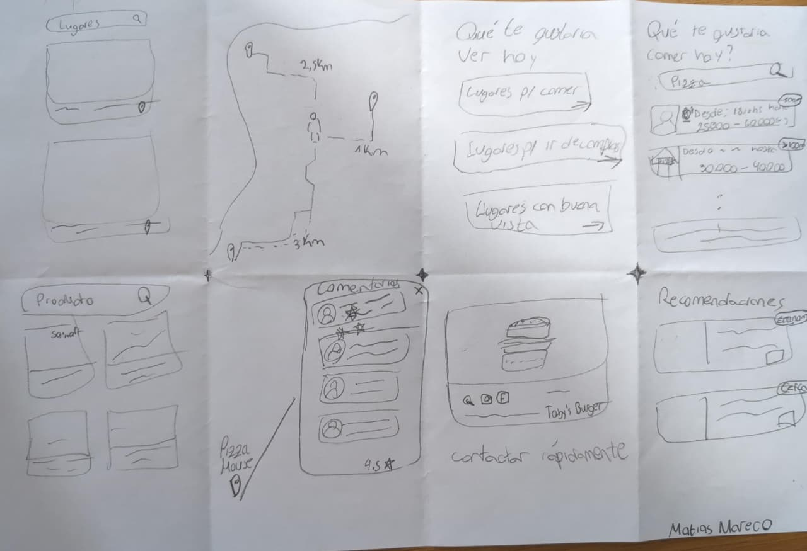
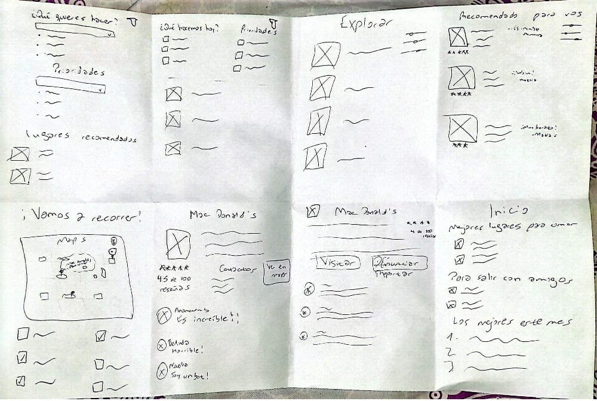
| Principio | Sección «Explorar» | Sección «Inicio» |
|---|---|---|
| Manipulación directa | La lista vertical sugiere deslizar el dedo hacia arriba y hacia abajo. | Invita a deslizar horizontalmente el carrusel y verticalmente entre categorías. |
| Affordance | Las tarjetas delimitadas sugieren que se pueden tocar. | Un recuadro asomando en el borde derecho invita a arrastrarlo. |
| Retroalimentación | Falta definir qué ocurre al tocar una tarjeta. | Falta definir el efecto al llegar al último lugar de la fila. |
| Restricciones | La descripción se limita a dos líneas con «...». | Mostrar como máximo los 5 mejores por categoría con botón «Ver más». |
| Significado | El título «Explorar» y las fotos indican de qué trata cada tarjeta. | Títulos como «Para salir con amigos» indican qué información se encontrará. |
| Mapeo | Deslizar hacia arriba revela más lugares abajo. | Mover el dedo de derecha a izquierda desplaza la lista en la misma dirección. |
Se eligieron los bocetos de las pantallas «Inicio» y «Explorar». Esta dirección responde directamente a la historia «quiero recibir recomendaciones basadas en mí…» y cumple mejor el principio de affordance: las tarjetas invitan claramente a ser tocadas para ver más detalles.
4 · Prototipar
Papel → wireframes → alta fidelidad. El prototipo en papel mostró dos pantallas: «Inicio», con recomendaciones y rankings, y «Explorar», con mapa y categorías; el botón «Explorar» llevaba a la segunda pantalla.
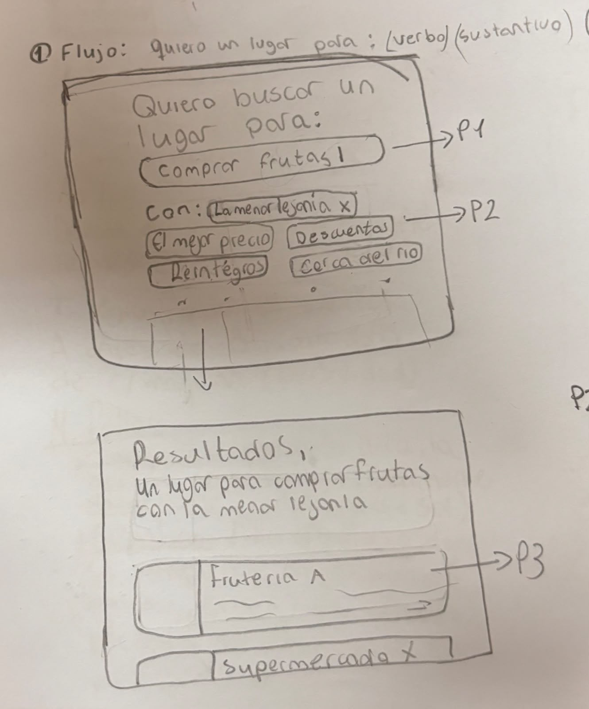
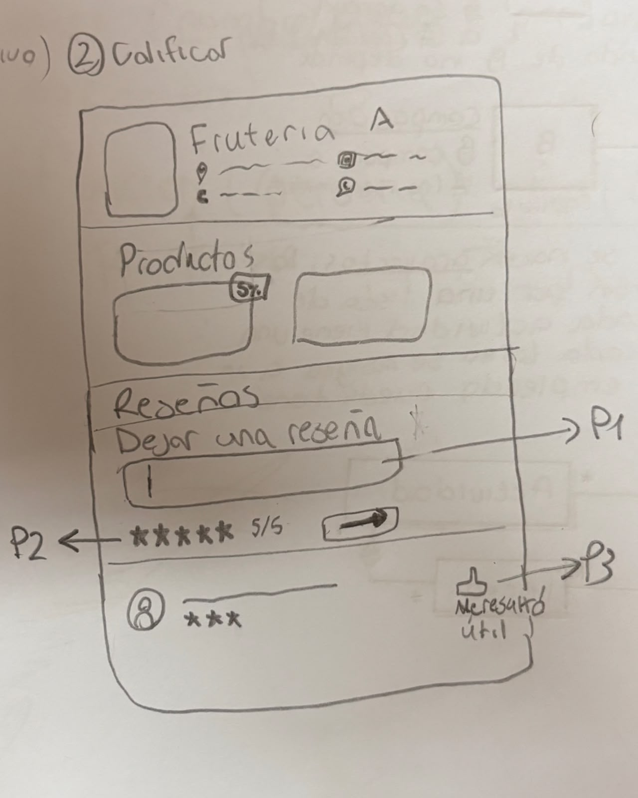
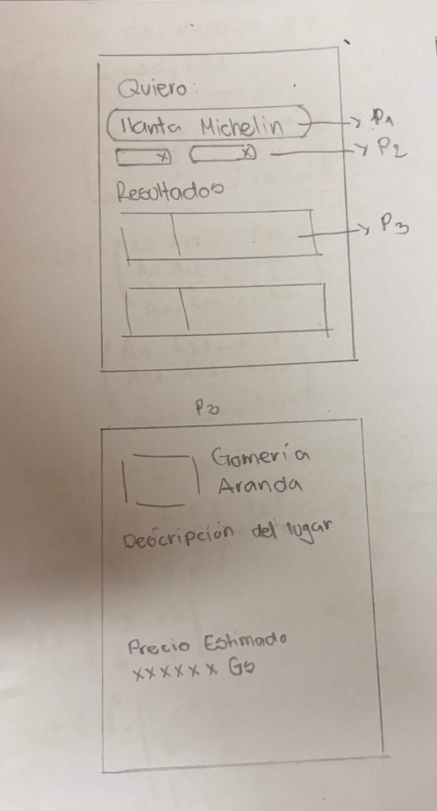
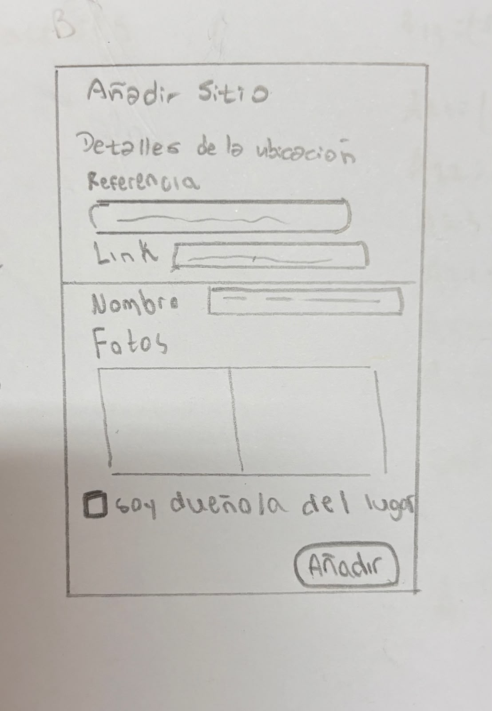
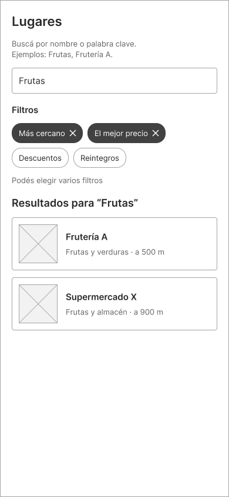
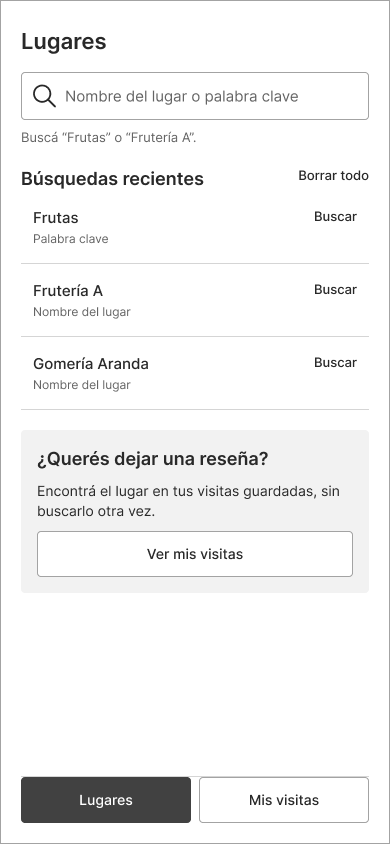
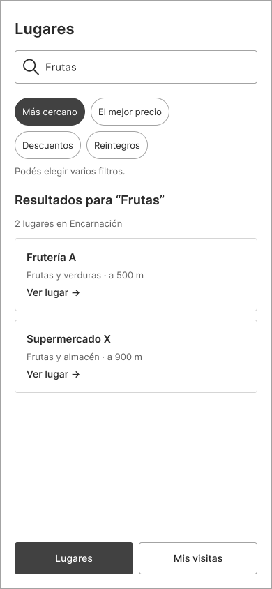
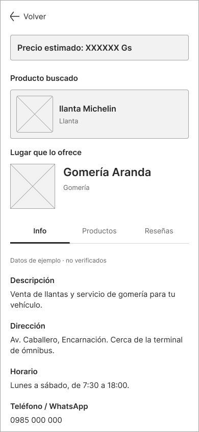
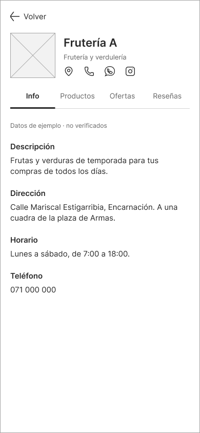
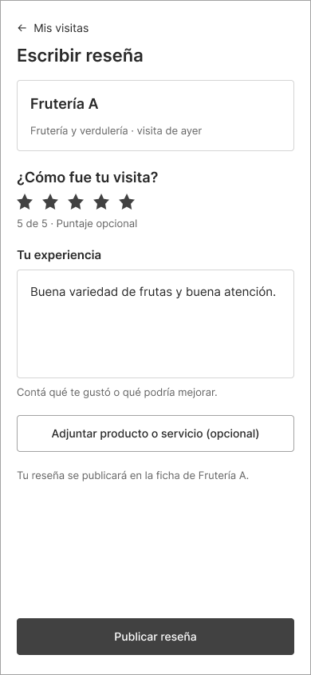
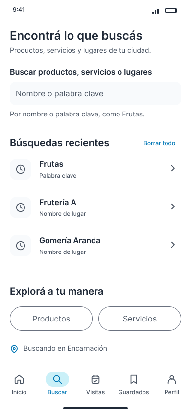
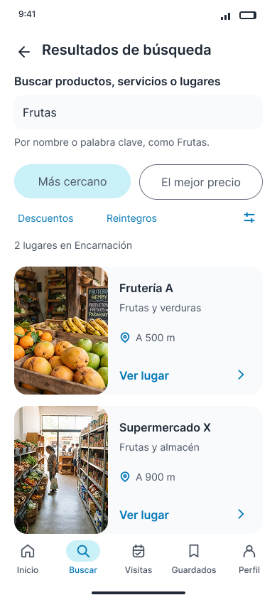
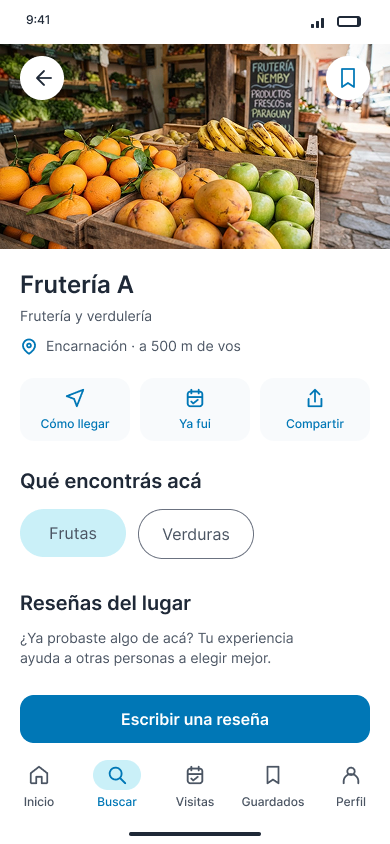
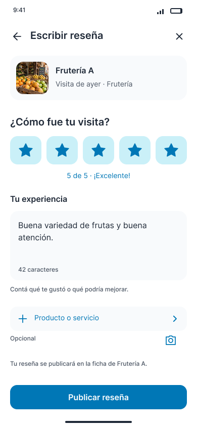
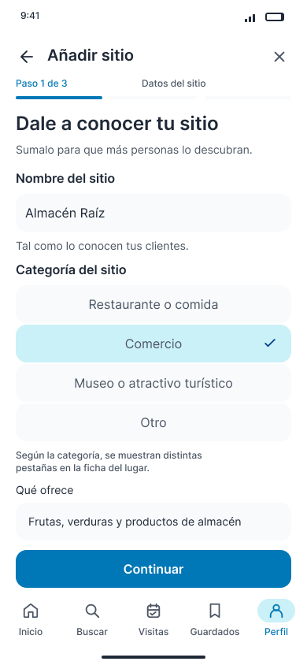
Papel → wireframe: las dos pantallas del boceto se digitalizaron en Inicio y Explorar, con búsquedas recientes y resultados por producto o servicio. El cambio responde a la necesidad de comparar opciones sin depender del primer resultado.
Wireframe → alta fidelidad: se aplicó la paleta Azul océano, se agregaron imágenes y contenido realista y se completó la ficha con precio, horario, ubicación y contacto.
Papel → wireframe: la recomendación por categorías pasó a una lista de tarjetas con datos de lugares reales (Gomería Aranda, Frutería A), para poder comparar sin entrar al mapa.
Wireframe → alta fidelidad: las tarjetas tomaron el estilo del sistema de diseño y los resultados muestran precio y distancia como datos principales.
Papel → wireframe: se incorporó un formulario de reseña y una pantalla de publicación, y el alta de sitio pasó a tener pasos diferenciados.
Wireframe → alta fidelidad: el flujo se completó con confirmación, vista previa y estado «sitio enviado a revisión», para que el usuario sepa qué pasó y cómo seguir.
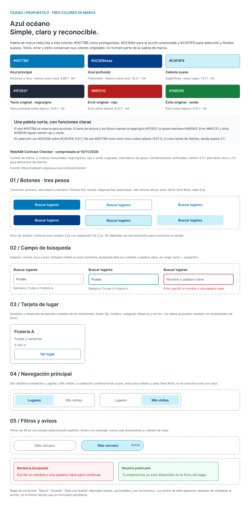
#CAF0F8
#0077B6
#023E8A
#FFFFFF
Títulos: Playfair Display.
Cuerpo: Inter / sans del sistema.
Botones, tarjetas de comercio, filtros, ícono de búsqueda y estados de carga, confirmación y error.
5 · Evaluar
A completar con los resultados del recorrido cognitivo y la prueba de usabilidad con wireframes. Sí se cuenta con la revisión del prototipo en papel hecha por otro equipo:
| # | Duda o punto de fricción | Severidad | Cambio |
|---|---|---|---|
| 1 | No entiende para qué son los recuadros que están al lado de los nombres de los negocios. | A completar | A completar |
| 2 | No tiene una forma de listar por categorías sin ver el mapa. | A completar | A completar |
| Problema | Evidencia | Severidad | Cambio |
|---|---|---|---|
| A completar | A completar | 1 · Cosmético | A completar |
| A completar | A completar | 2 · Menor | A completar |
| A completar | A completar | 3 · Mayor | A completar |
| A completar | A completar | 4 · Bloqueante | A completar |
Plan de la prueba con la demo · Entrega final
Verificar si una persona del perfil logra encontrar, comparar y elegir un comercio en la demo sin asistencia, y si confía en la información mostrada.
Al menos 5 jóvenes que vivan o visiten Encarnación con frecuencia. Se excluyen compañeros del curso y personas que participaron en pruebas anteriores. Sin nombres en el portafolio.
A completar: contactos personales, grupos de estudiantes de la UNI y difusión en redes.
Pensamiento en voz alta, un facilitador y un observador, consentimiento informado y grabación solo con autorización.
Por tarea: completitud, tiempo, errores y SEQ (1–7). Al final: SUS.